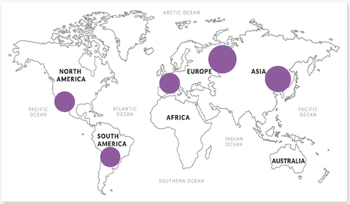

Amethist
Favoriete edelsteen
De amethist is mijn favoriete steen van de edelstenen driehoek, dit komt omdat ik een fan ben van de paarse kleur van deze steen. Ik vind het mooi hoe een steen uit de natuur deze kleur kan krijgen.
In vergelijking tot de bergkristal of rozenkwarts heb ik ook meer amethisten door de laatste jaren gekocht. Ik heb hangers, ringen en andere soorten amethisten zoals; de cactuskwarts en amethist chalcedoon.
De amethist is een edelsteen die bestaat uit grote kristallen. De kleur van de edelsteen variert tussen lila en donker paars.
Herkomst
Deze edelsteen is te vinden in landen zoals: Brazilie, Uraguay, Madagascar, Canada, India, Mexico, China en de Verenigde Staten. Maar ook in Europese landen zoals in Rusland, Frankrijk, Duitsland, Ierland en Zwitserland.
De herkomst van de edelsteen kan de paarse kleur beïnvloeden, Uraguay amethisten hebben een donker paarse kleur en die van Brazilie zijn vaak licht paars.
Dit is een wereldkaart met daarop stippen op de plaatsen waar amethist vaak voorkomt.
Kristallen Vorming
Een amethist ontstaat uit magmatische mineralen. Het ontstaat uit afgekoeld magma onder het oppervlakte van de aarde, of door lava dat boven de grond is gestold. Door druk en veranderende temperatuur, groeien deze kristallen over miljoenen jaren uit tot grote stenen. Aardbevingen zorgen ervoor dat edelstenen naar het aardoppervlak komen. De paarse kleur van de amethist ontstaat door ijzer dat aanwezig is tijdens het stollingsproces.
Donkerpaarse amethisten zijn van betere kwaliteit en ook vaak duurder dan licht paarse amthisten. Hoe meer kleur in het kristal, hoe duurder deze is. Een bekende vorm van de amethist is een geode, dit is een holle steen waar kristallen in vormen.
Sieraden
Omdat de amethist mijn favoriet is, heb ik ook sieraden van de steen. Ik heb ruwe stenen, zoals bij de kettingen het paarse blok in het midden, maar ook geslepen stenen die aan een zilveren ketting zitten.
In de kettingen zijn ook verschillende kleuren te zien, dit komt omdat deze een mix zijn zoals de amethist chevron. Dit is amethist en witte kwarts.
De ringen zijn handgemaakt, één heb ik van een winkel en de ander van een mineralenbeurs. Ik heb ze op mijn amazoniet hart gelegd om de paarse kleur nog meer op te laten vallen.
Feiten

-
Wist je dat als een amethist gebrand wordt over een hitte van 300 graden celsius de kleur van de steen veranderd naar geel.
-
De amethist is de derde steen van het edelstenen alfabet.
-
De naam amethist is afgeleid van het Griekse woord: amethustos (ἀμέθυστος (zonder dronken zijn)) De Grieken geloofden namelijk dat deze steen ervoor zorgde dat zij niet dronken werden; de steen heeft een heldere werking.